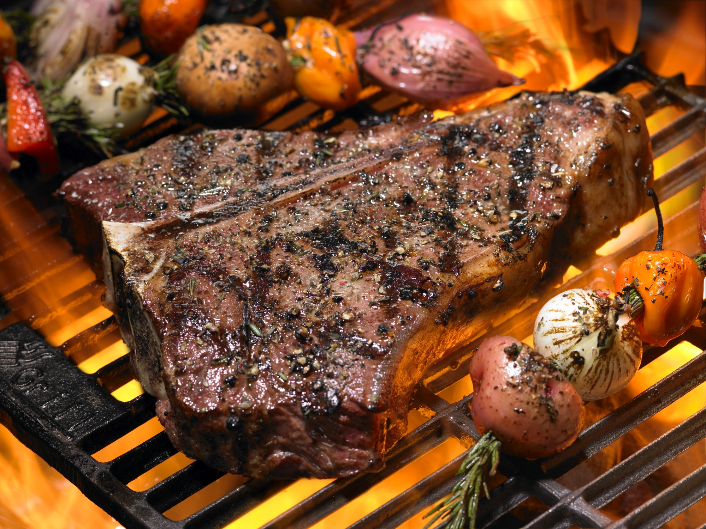

Bistecca alla Fiorentina

Description
The hearty preparation of steak native to Tuscany and known the world over.
Ingredients
- A thick-cut porterhouse steak from a steer or heifer dry-aged for two weeks or more.
Steps
- Bring the steak, yet unseasoned, to room temperature.
- Sear the steak hard for three or so minutes close to a charcoal grill.
- Flip using tongs, gripping lightly, and sear the other side.
- Bring the temperature down (or the steak further away from the coals) and stand the steak up on its flat bone.
- Let stand for five to seven minutes.
- Serve.